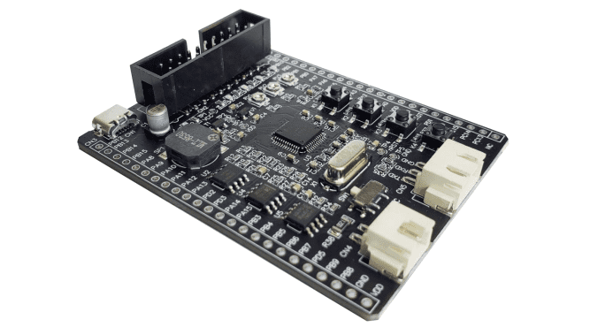

MB063 (Mini-F0144)¶
简介¶
MM32 MiniBoard 系列开发板，配合 ARM Keil/IAR 集成开发环境，构成灵动 MM32 Cortex-M0 MCU 完整的开发生态。该开发板为基于 Cortex-M0 的小容量开发板，支持 MM32F0140 MCU。

主要特点¶
Mini-F0144 开发板具有如下特点：
- 支持 MindMotion MM32 Cortex-M 系列 MCU 开发评估
- 支持 Keil uVision v5.0/IAR EWARM v7.80 以上的集成开发环境
- 开发板 MCU 供电电源基于 3.3V 电压设计
- 支持高达 4KV EFT 抗干扰能力
- 支持 SWD 调试接口
- 目标 MCU USB 接口供电
- 4-按键
- 4-LED
- 1-UART 连接器
- 1-USB 连接器
- 1-CAN 连接器
- 1-8Mbit 的 SPI Flash 存储器
- 1-2048bit 的 I2C 存储器
- 1-无源扬声器
- 1-3 模拟输入电位器
- 1-MCU 引脚功能选择开关
- 全贴片工艺设计
硬件部分¶
Mini-F0144 开发板的按键、LED 指示灯、CAN 连接器以及部分串口连接功能及关系，如以下表格说明：
表1 按键功能与 MCU 连接关系表
| 开发板 | K1 | K2 | K3 | K4 |
|---|---|---|---|---|
| Mini-F0144 | PB1 | PB2 | PB10 | PB11 |
表 2 LED 指示灯与 MCU 连接关系表
| 开发板 | LD1 | LD2 | LD3 | LD4 |
|---|---|---|---|---|
| Mini-F0144 | PA15 | PB3 | PB4 | PB5 |
表 3 CN1 目标 MCU USB 插座
| 引脚功能 | Mini-F0144 |
|---|---|
| VBUS | VCC |
| USB-DM | -- |
| USB-DP | -- |
| ID | GND |
| GND | GND |
表 4 CN4 CAN 连接器插座
| 引脚功能 | Mini-F0144 |
|---|---|
| CAN_RX | PB8 |
| CAN_TX | PB9 |
开发目标¶
Mini-F0144 开发板基于开发对象部分包含：模拟输入、PWM、UART、SPI-Flash、I2C-EEPROM 等部分。
表 5 目标 MCU 模拟功能连接关系表
| 引脚功能 | Mini-F0144 |
|---|---|
| RV1 | PA5 |
| RV2 | PA4 |
| RV3 | PA1 |
表 6 目标 MCU PWM 输出连接关系表
| 引脚功能 | Mini-F0144 |
|---|---|
| SP1 | PA8 |
表 7 目标 MCU UART 输出连接关系表
| 引脚功能 | Mini-F0144 |
|---|---|
| GND | GND |
| eRXD | PA9 |
| eTXD | PA10 |
| RXD2 | PA3 |
| TXD2 | PA2 |
表 8 目标 MCU I2C 输出连接关系表
| 引脚功能 | Mini-F0144 |
|---|---|
| SCL | PB6 |
| SDA | PB7 |
表 9 目标 MCU SPI 输出连接关系表
| 引脚功能 | Mini-F0144 |
|---|---|
| SS | PB12 |
| SCK | PB13 |
| MISO | PB14 |
| MOSI | PB15 |
资源下载¶
修改记录¶
- V1.1 @ 2024/07/30：在线版更新
- V1.0 @ 2022/05/24：首次发布
注意：如需打印或保存本页面内容，请按"Ctrl+P"选择打印即可